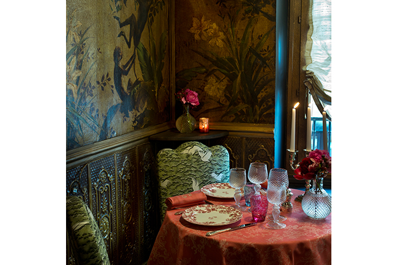
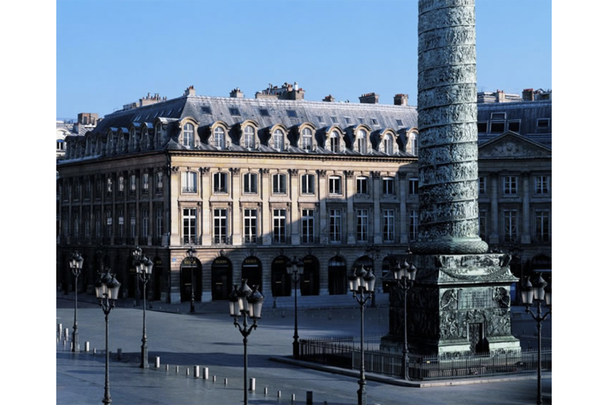
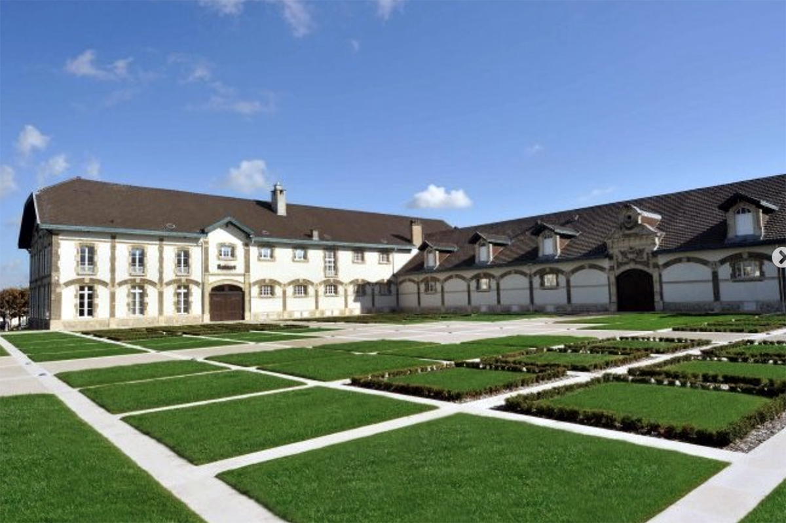
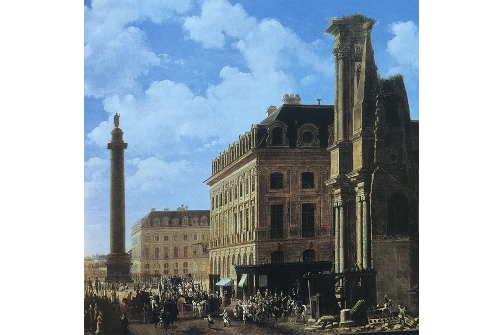
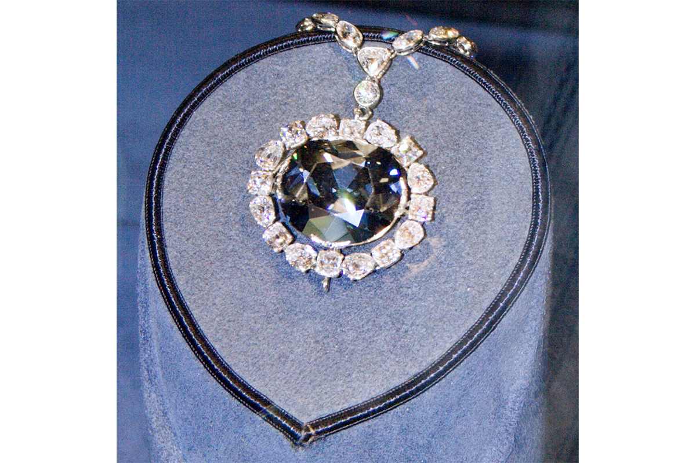

Author: Taramis
Do we ever wonder why we are happy after spending a fortune on our luxe handbag or why does an occa-sion become special only when a Champagne cork pops? This and many other mysteries of fashionable life find its source in the most crucial period of elegance and luxury good- Louis XIV reign in France. It is remarkable that from this moment on- luxury, sophistication and elegance became factors to be reckoned with. Some of this has of course had a precedent in ancient Rome and especially the Renaissance but argu-ably at the time their style of fashion and customs did not export to other nations. In the 1660’s Paris be-gan a reign over luxury living that still endures toady, three and half centuries later.
In 1676 Louis came up with an idea to beautify Paris. For a start he introduce lighting in the streets of Paris. This was a huge novelty as no city in Europe glittered after sunset. This is probably why Paris is called the “City of Light’. From the beginning Louis seemed know what kind of image he wanted to convey which was one of opulence and elegance.
With the help of his Minister of Finance who wrote the book on economic protectionism and trade wars he was determined to dominate the hugely lucrative luxury trade market. Together they created the first economy driven by fashion and taste. One of the first areas he area he sees out to develop was design. By the end of the seventeenth century France has become the centre for interior decoration. Decor functioned as the new art of living. Mirrors are around us everywhere today and this is because Louis XIV and his decorators. He made it more accessible to own a mirror because up until then mirrors were produced in Venice and cost a fortune. Before his reign shops were more like warehouses. Also most of the clothes were Taylor made in Europe. By the end of Louis XIV’s fashion designers, brand names, fashion seasons and fashionistas were created. Everything was in place for a novel pleasure to exist and fashion began to be referred all over Europe as a la mode. Fashion was French.
The coffeehouse became an institution in England , Netherlands and Germany in the 1650’s and 1660’s . They were fairly modest institutions- men frequented them to drink coffee, beer and to smoke. In Paris the modest coffee house was reinvented and became luxurious. Beer was banished- exotic cocktails were sipped instead, customers sat at tables made from marble, walls were covered with elegant mirrors and crystal chandeliers swung from the ceilings. By the turn of the 18h Century a newly fashionable cafe scene had been created in Saint German des Pres. The cafe clientele was very different to they counterparts in Europe: elegant women gathered to show off their fashionable outfits.

Another trait of the French “chic and cher” phenomena was the hairdresser to the rich and famous. Ce-lebrity hairdresser status meant considerable financial rewards. The custom was that women’s hairstyling needs were taken care by the ladies maids. With the arrival of the celebrity hairdresser a woman’s hairstyle became a signature that other society ladies would recognise. By the end of the seventeenth century whilst continuing to make house call for their famous clients hairdressers also had shops so they could reach a wider clientele. A multitude of hairdressers opened shops by the Louvre, right around the corner from Pal-ais Royal.
 French chefs were the first to radically eliminate Oriental Spices that was the trademark of Medieval Cui-sine. Also before the birth of Haute Cuisine sweet dishes were part of every course. The new French chefs allowed salt and pepper dominate their menus and move the sweet dishes to the last course which began to be called dessert. With the help of lots of butter chefs started making sauces that would become the inte-gral part of the dish. It would also not be necessary to crowd the table with lots of food like in the middle ages. Freshest seasonal food would be cooked without destroying their true taste. Asparagus should be croquant. Meat should be rare and just of the grill in its own jus. The doctrine of elegant simplicity in food, art de table created a new wave in cuisine which will become essentially the art of fine entertaining.
Champagne was invented in France by 1674 and was marketed as the “in” and finest wine. The man who invented champagne was a Benedictine monk Dom Pierre Pérignon. From the late seventeenth century on , no ceremony or celebration was considered perfect if champagne was not poured. The bubbly new wine had become an integral part of the dazzling new image of France and Voltaire immortalised it in his poem called “Le Mondain” (The man of the world) “The sparkling foam of this frosty wine/ Is the brilliant image of our Frenchmen. It was Dom Thierry Ruinart , another Benedictine, who shared Pérignon’s secret wine with his family of wine makers and founded the first firm known as Maison devoted exclusively to the production of champagne.
Before Louis XIV, no one would have ever considered of diamonds as anyone’s best friend. Before the sev-enteenth century very few people thought of diamonds at all. During the Renaissance the pearl was the status symbol followed by rubies and sapphires. The most celebrated piece of jewellery owned by Anne of Austria , Louis XIV’s mother was a pearl necklace. By the end of Louis XIV’s reign the diamond rivière ( a necklace composed of a single row of graduated stones) had replaced the string of pearls as the trophy necklace. Cartier, Van Cleef & Arpels, Chaumet Boucheron are French jewellers who can be seen in Paris’ ultrachic Place Vendôme today.
Louis XIV gave the world something far more important than luxe goods. He redefined some of our basic activities , usually mundane to a new status- that of pleasure and indulgence.Italians called Paris the coun-try of desire.
 